SEMPP MIDI CONTROL controla Auto-Tune en la UAD Console de tu Apollo desde Ableton Live: tonalidad, escala, retune y bypass, clip a clip. Además lee tu set de Ableton y te enseña, en el Mac y en el iPad, la canción que suena, sus partes, los textos de tus clips MIDI, el setlist y cuánto queda.
Ableton manda MIDI a SEMPP; SEMPP mueve el Auto-Tune en Console y enseña el show en el Mac y en los iPads. Desde SEMPP también puedes manejar el transporte de Ableton.
Necesitas
Un Mac con macOS 10.15 o posterior (Intel o Apple Silicon).
Una Apollo con UAD Console y Auto-Tune cargado en un canal.
Ableton Live 11 o 12.
Opcional: uno o varios iPads en la misma red que el Mac.
Instalación
Abre el instalador de SEMPP (archivo .dmg) y haz doble clic en Instalar SEMPP MIDI CONTROL. Si es una versión de prueba, el instalador lo indica con la etiqueta BETA.
Si macOS dice que no puede abrirlo porque es de un desarrollador no identificado: Ajustes del Sistema → Privacidad y seguridad → Abrir igualmente.
Pulsa Instalar y escribe la contraseña del Mac.
Al terminar se abre SEMPP y el asistente de inicio, que comprueba paso a paso que todo funciona. Puedes saltarlo y volver a abrirlo en Ajustes → General → Asistente de inicio.
Reinicia Ableton después de instalar o actualizar: así carga el script SEMPP nuevo.
Preparar Ableton
1 · Superficie de control y salida MIDI
Ableton → Preferencias → Link, Tempo y MIDI. Son dos cosas en la misma pantalla:
1 En una fila libre de Superficie de control elige SEMPP, con Entrada y Salida en Ninguno (no usa MIDI: así lee el set y recibe Play/Stop). 2 En Puertos MIDI, activa Track en la salida SEMPP MIDI CONTROL.
2 · Cómo organizar el set
Cada localizador es una canción del setlist (su nombre es el de la canción). En una pista MIDI de partes, un clip vacío por parte: su nombre es lo que ves en los bloques de partes. En otras pistas (letra, avisos…), el nombre de cada clip es el texto que se muestra en grande. La pista de tune manda los CC al Auto-Tune.
En Ajustes → Ableton eliges qué pistas leer y cuál es la de partes de la canción.
Pestaña TUNE
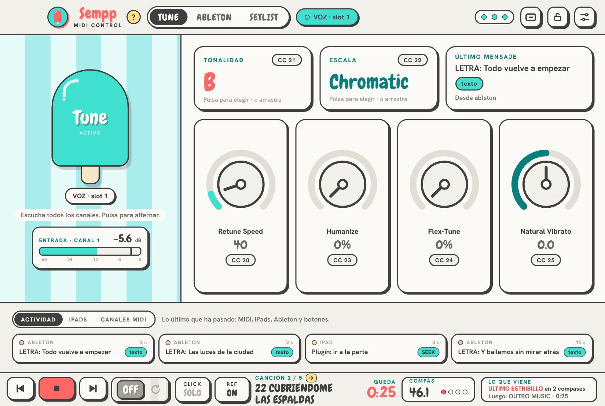
12345613789101211
1El polo: pulsa para activar o quitar el Auto-Tune (bypass).
2Tonalidad: púlsala para elegirla en un piano, o arrastra, usa la rueda o las flechas. El botón CC le asigna un control MIDI. NUEVO
3Escala: púlsala para elegir entre todas las de tu Auto-Tune, con su nombre en español.
4Ruedas: Retune Speed, Humanize, Flex-Tune y Natural Vibrato.
5Panel de abajo, con tres botones: Actividad (lo último que ha pasado: MIDI, iPads, Ableton y botones), iPads (quién está conectado ahora, desde qué vista y aparato, y si hay PIN y los controles están activos) o Canales MIDI (cada canal puede controlar un Auto-Tune distinto o reenviarse a buses IAC: luces, visuales…). Recuerda el último que elegiste. NUEVO
6Pestañas: TUNE, ABLETON y SETLIST.
7Vista de directo: abre o cierra la ventana flotante.
8Candado: bloquea al instante los controles de todos los iPads.
9Ajustes: bypass, controles, textos, MIDI, iPad y general.
10Estado: tres puntos (Console, MIDI y Ableton). Verde = bien. Si uno falla, aparece su nombre en rojo; con el ratón encima ves el detalle y con un clic abres los Ajustes. NUEVO
12Logo: abre la web, sempp.miguelsempere.es. NUEVO
13Instrucciones (?): enseña u oculta todas las ayudas de uso («Pulsa para elegir · o arrastra», «Pulsa para alternar», los agarres del setlist…). Si ya te lo sabes, apágalo y la pantalla queda más limpia; lo recuerda. NUEVO
11Vúmetro de la entrada: la señal que entra en el canal de Console donde está el Auto-Tune, antes del fader y del Auto-Tune. NUEVO
Vúmetro de la entrada NUEVO
Mide lo que llega al canal de UAD Console que tiene el Auto-Tune (por ejemplo, el canal 1 con el micro de voz), tal como entra: antes del fader y antes del Auto-Tune. Va de −60 a 0 dB y el número es el pico de los últimos 2 segundos.
Color
Qué significa
Verde
Bien. Por debajo de −12 dB.
Amarillo
Fuerte. De −12 a −3 dB.
Rojo
Al límite. Por encima de −3 dB: baja la ganancia del previo.
CLIP
La señal ha saturado. El aviso se queda encendido (aunque ya no sature) hasta que lo pulses, para que no se te escape.
SIN SEÑAL
No entra nada desde hace 5 segundos mientras Ableton está sonando: revisa el micro, el cable o el previo.
También está en el iPad, en la vista del técnico. Si no hay ningún Auto-Tune en Console, el vúmetro no aparece.
Elegir tonalidad y escala NUEVO
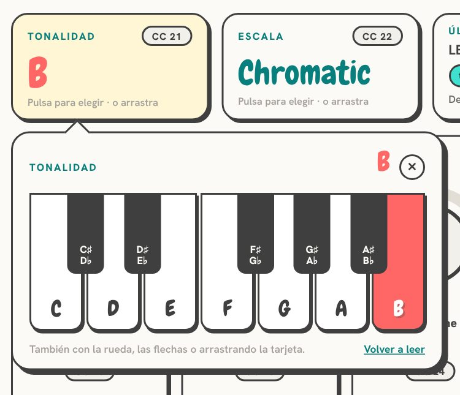
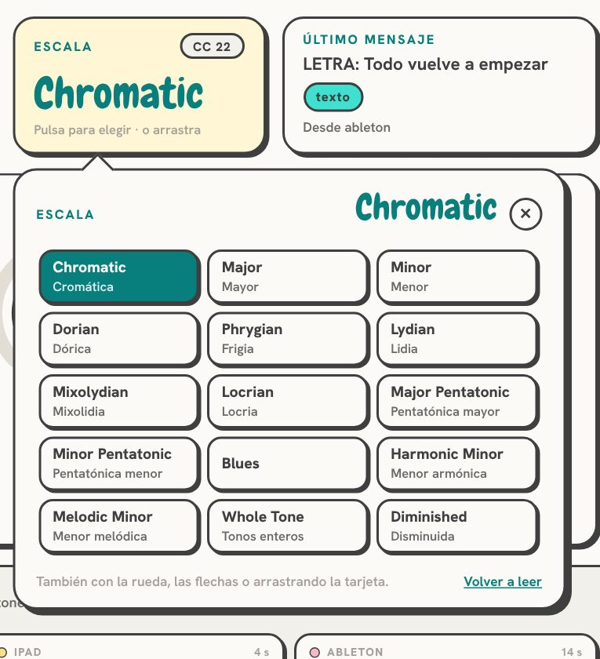
Pulsa la tarjeta de la tonalidad y sale un piano: toca una tecla y el Auto-Tune cambia al momento. La de la escala enseña todas las escalas de tu Auto-Tune, con el nombre en inglés (como en el Auto-Tune) y en español.
La primera vez, SEMPP tiene que leer las listas de tu Auto-Tune (botón Leer del Auto-Tune, unos segundos por lista). Mientras lee, el Auto-Tune va pasando por todas las tonalidades o escalas, así que hazlo con el Auto-Tune en bypass o sin que nadie cante. Lo recuerda para siempre; si cambias de Auto-Tune, pulsa Volver a leer.
Ajustes → Tune → Bypass: qué Program Change o CC apaga y enciende el Auto-Tune (por defecto, PC 0 = activo, PC 1 = apagado, PC 2 = alternar).
Pestaña ABLETON
Lo que necesitas mirar durante el show, en grande:
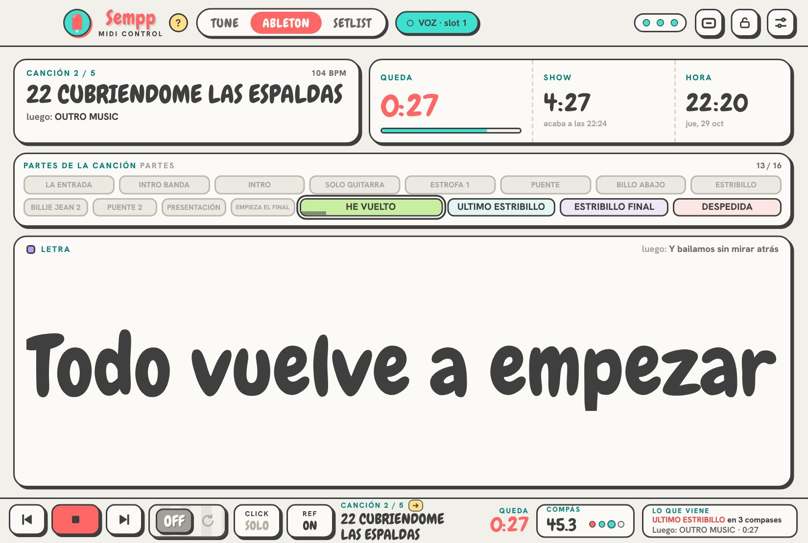
123456
1Canción que suena, su número en el setlist, el tempo y la siguiente.
2Queda: cuenta atrás de la canción; parpadea los últimos 10 segundos.
3Show: lo que queda de concierto y a qué hora acaba.
4Hora actual.
5Partes de la canción: gris = ya han pasado; con borde = la que suena. Haz clic en una para ir a ella (ver cómo entra).
6Textos de las pistas elegidas, del tamaño que quepa, con lo que viene después.
Barra de abajo y transporte
Siempre visible, en TUNE, ABLETON y SETLIST. Los botones Click y Ref solo salen si los activas (ver cómo):
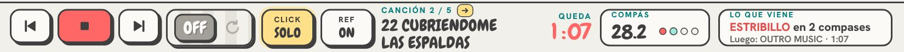
12345678910
1Canción anterior del setlist (si la actual ya ha avanzado, vuelve a su principio, como en Ableton).
2Play / Stop.
3Canción siguiente del setlist.
4Loop de Ableton: gris y OFF apagado; turquesa, ON y con la flecha girando encendido.
5Click SOLO: como el botón de solo de una mesa. En gris, apagado: púlsalo para dejar sonando solo el click. En amarillo, activo: púlsalo para quitar el solo. NUEVO
6Ref: silencia o devuelve la pista de Artist Ref (coral, MUTE). NUEVO
7Canción que suena, con el icono de lo que hará al acabar.
8Queda de la canción.
9Compás y pulso en directo.
10Lo que viene: la próxima parte y en cuántos compases entra, y la próxima canción con el tiempo que falta.
Anterior y siguiente usan los botones de localizador de AbletonNUEVO (las flechas ◀ ▶ junto a «Set»): es el mismo salto que harías en Ableton. Sonando, Ableton espera a la siguiente frontera de su cuantización global y muestra en el Arrangement adónde va a saltar. Si has reordenado el setlist o quitado canciones del show, SEMPP salta a la canción que toca en tu setlist, a tempo, por su cuenta.
Cómo se lee el compás
Play, Stop y colocar una canción NUEVO
Funciona igual con el Play de SEMPP, del iPad, de Ableton o con la barra espaciadora. El Play de SEMPP funciona como la barra espaciadora de Ableton: al parar a mitad, el localizador no se mueve, se queda donde has parado; el siguiente Play vuelve a empezar la canción (o la parte que hayas elegido). Si una canción entra sola después de otra, el Play empieza la nueva. NUEVO Si mueves tú la reproducción en Ableton (clic en la línea de tiempo, los marcadores o tus atajos de teclado), manda Ableton: aunque antes hubieras elegido otra canción en SEMPP, Play arranca donde tú lo has dejado. También si lo hace tu sesión: un clip MIDI que al acabar la canción hace «stop y siguiente marcador» deja el siguiente Play en ese marcador. NUEVO
Pestaña SETLIST
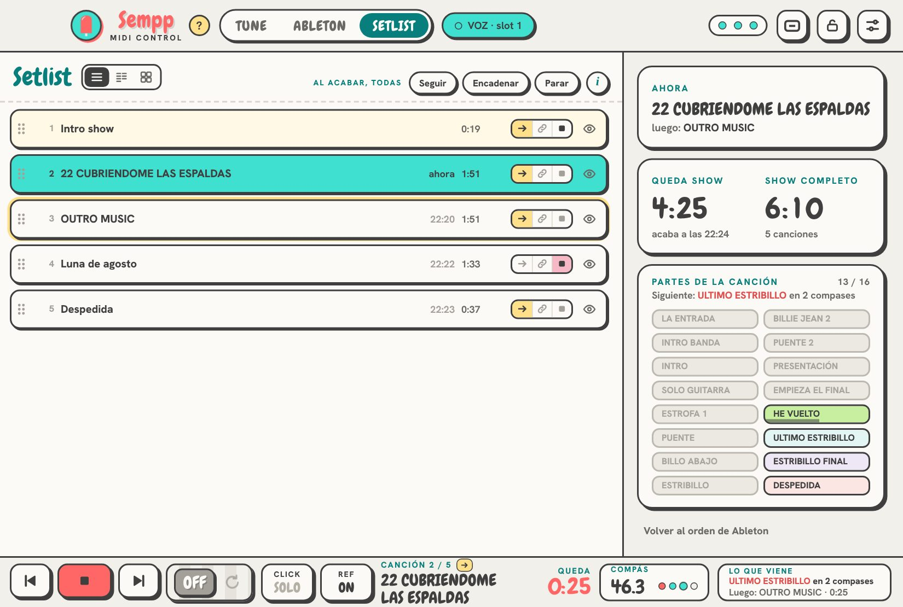
12345678910
1Reordenar: arrastra desde los puntitos.
2Al acabar esta canción: Seguir, Encadenar o Parar.
3Ojo: la quita del show; se la saltan anterior/siguiente, tiempos y encadenado.
4Doble clic en una canción para colocarte en su principio (sonando, entra a tempo).
5Queda show y show completo, con la hora a la que acaba. Con horas (1:09:02) la cifra se ajusta para verse entera.
6Al acabar, todas: el mismo modo a todo el setlist de un golpe.
7Volver al orden de Ableton (el del Arrangement).
8(i): las instrucciones del setlist y de los modos al acabar. NUEVO
10Vista: lista, compacta (en columnas, para setlists largos) o tarjetas, como en el Finder. Se recuerda. NUEVO
9Partes de la canción que suena, como en ABLETON: pulsa una para ir a ella (sonando, entra a tempo; parado, se coloca). Arriba, cuántos compases faltan para la siguiente. NUEVO
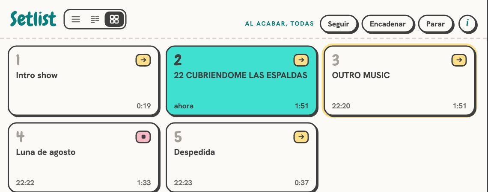
Vista de tarjetas: número, nombre, a qué hora empieza, duración y qué hace al acabar. Doble clic para ir a una canción.
Qué pasa al acabar cada canción
Si el Loop de Ableton está cerrando la canción, manda el loop: no salta hasta que lo quites. Las duraciones con ≈ son estimadas; se ajustan solas cuando la canción ha sonado una vez (SEMPP aprende su tempo).
Ir a una parte de la canción
Desde la pestaña ABLETON o desde el iPad puedes saltar a cualquier parte (ESTRIBILLO, PUENTE…):
Con Ableton parado, tocar una parte solo coloca la reproducción en su principio, lista para Play.
Una parte funciona como un marcador.NUEVO Funciona como la barra espaciadora de Ableton: después de ir a una parte, al parar la reproducción se queda donde has parado y el siguiente Play arranca en esa parte. Play, Stop y Play otra vez empiezan siempre en ella. Si la eliges con Ableton parado, la reproducción se coloca en la parte, lista para tu Play. Se queda así hasta que elijas otra parte u otra canción, o hasta que muevas tú la reproducción en Ableton.
Click y Artist Ref NUEVO
Dos botones para el ensayo y el show: CLICK deja sonando solo la pista de click (la pone en solo) y REF silencia o devuelve la pista de voz de referencia de la artista (mute). Están en la barra de abajo del plugin y en el iPad del director musical.
Activarlos y elegir las pistas
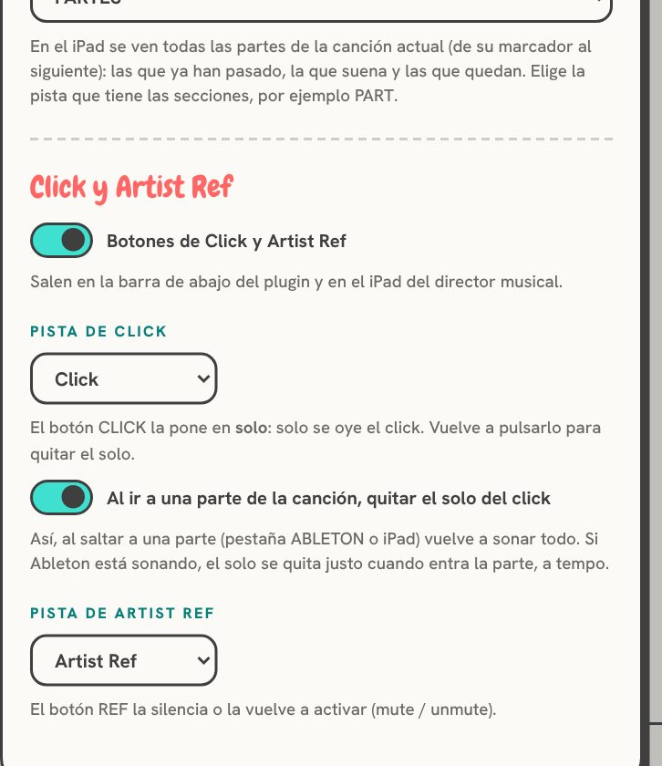
1234
1Ajustes → Ableton → Click y Artist Ref: enciende los botones.
2Pista de click: SEMPP lee las pistas del set (audio y MIDI); elige la del click.
3Al ir a una parte, quitar el solo (activado por defecto).
4Pista de Artist Ref: la de la voz de referencia.
Ensayar con el click en solo y saltar a una parte
Si prefieres que el solo se quede puesto, desactiva la opción 3.
Los botones cambian en el momento de pulsarlos y se confirman con lo que diga Ableton. Si en Ableton cambias el solo o el mute de esas pistas a mano, los botones lo reflejan. Si una pista no está en el set (por ejemplo, se ha renombrado), su botón sale en gris con «?».
iPad
Conecta el Mac al router del rack (mejor por cable) y el iPad a la wifi de ese router. No hace falta internet.
En Ajustes → iPad escanea con la cámara del iPad el código de la vista que quieras.
En Chrome o Safari: compartir → Añadir a pantalla de inicio, para abrirlo a pantalla completa como una app.
Toca la pantalla una vez al abrirla para que no se apague (y pon Bloqueo automático: Nunca en el iPad).
Vista del director musical
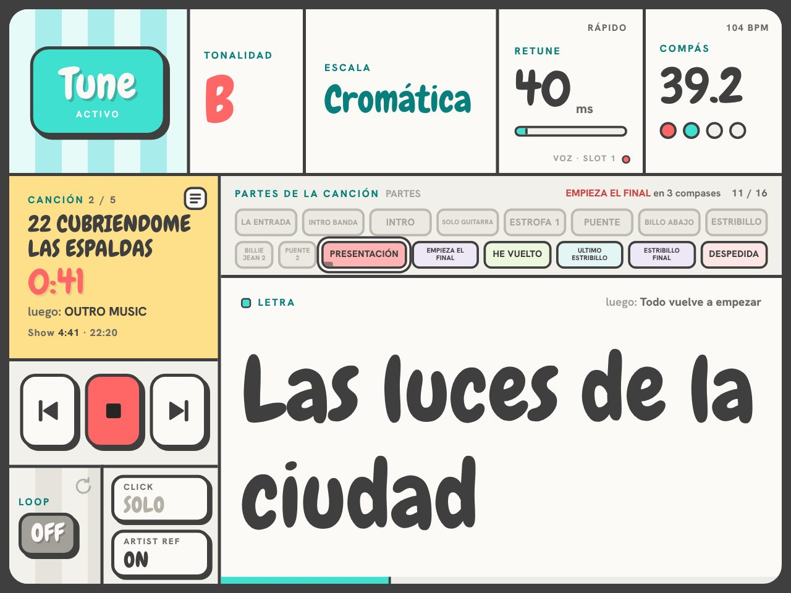
12345678
1Tune: mantén pulsado para activarlo o quitarlo.
2Compás y pulso, como en el plugin. NUEVO
3Canción, cuenta atrás, siguiente y show. Tócala para abrir el setlist.
4Transporte: anterior, Play/Stop y siguiente.
5Loop de Ableton.
6Partes: mantén una para ir a ella. Cada parte tiene su color (claro, para que el texto se lea siempre); la que suena se rellena entera. Arriba a la derecha, la siguiente parte y cuántos compases faltan (en las tres vistas). NUEVO
7Textos de tus pistas.
8Click (solo) y Artist Ref (mute), si están activados. NUEVO
Setlist en el iPad NUEVO
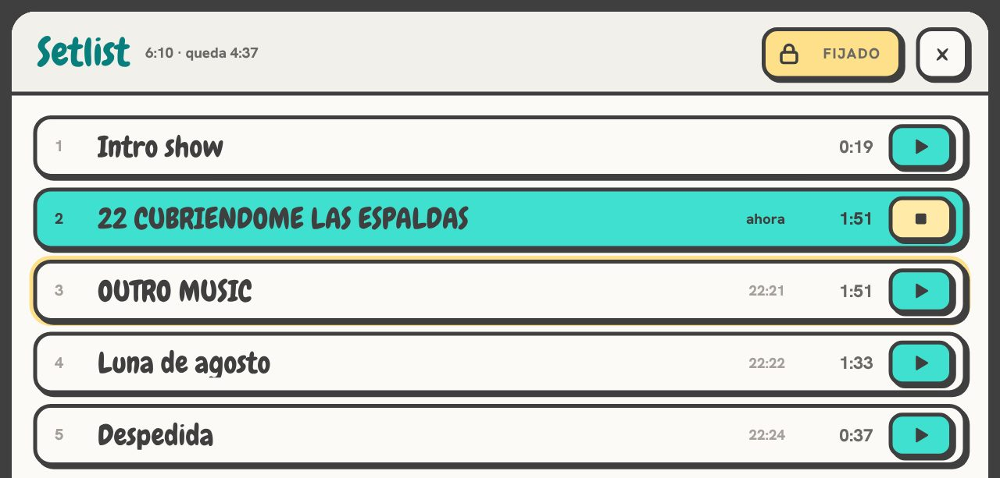
12345
1Toca la canción (o mantenla, según el modo táctil): se coloca en su principio, sin arrancar. Si ya suena algo, entra a tempo.
2▶: con Ableton parado, empieza esa canción ya; sonando, entra a tempo como al tocarla. Está siempre.
3La que suena ahora, en turquesa; la siguiente, con borde amarillo.
4■ en la que suena (amarillo, parpadeando): para Ableton. NUEVO
5Fijar: en amarillo («Fijado»), el setlist no se cierra solo al elegir o arrancar una canción. Lo recuerda cada iPad. NUEVO
La lista se desplaza con el dedo, suave, aunque sea larga.
Los nombres largos (canciones, partes, tonalidades y textos) se ven siempre enteros, en el iPad, en el plugin y en la vista de directo: la letra se ajusta a su sitio y nunca se parte una palabra por la mitad.
Vista del técnico: vúmetro NUEVO
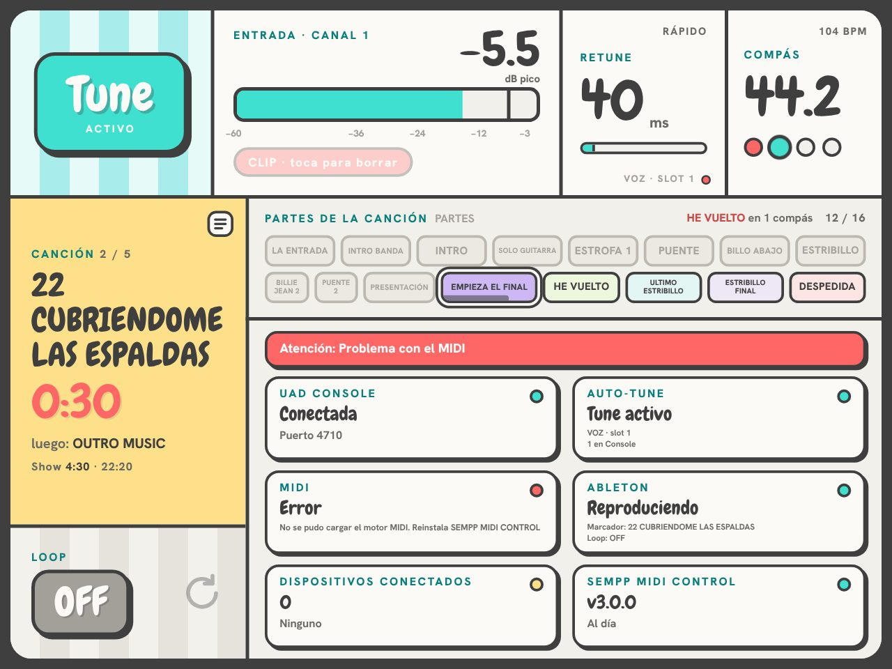
12345
1Vúmetro de la entrada del canal de Console con el Auto-Tune: el técnico ve si la voz llega bien sin ir al ordenador del escenario. Verde, amarillo desde −12 dB, rojo desde −3 dB.
2Pico de los últimos 2 segundos (la raya y el número).
3CLIP: se queda encendido hasta que lo tocas. Al lado, SIN SEÑAL si no entra nada mientras Ableton suena.
4Partes de la canción.
5Estado del sistema, conexiones y alarmas.
Vistas
Vista
Para quién
Director musical
Todo: tune, compás, canción y tiempos, partes, textos, transporte, loop, Click y Artist Ref.
Técnico
Vúmetro de la entrada de la voz, partes de la canción y, debajo, estado del sistema, conexiones y alarmas; con tune, compás, loop y setlist.
Banda
Canción y cuenta atrás en grande, compás, partes, textos y loop. Por defecto, solo para mirar.
PIN de acceso NUEVO
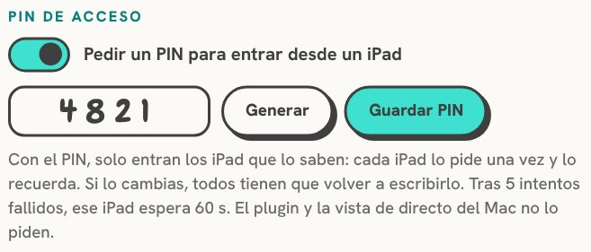
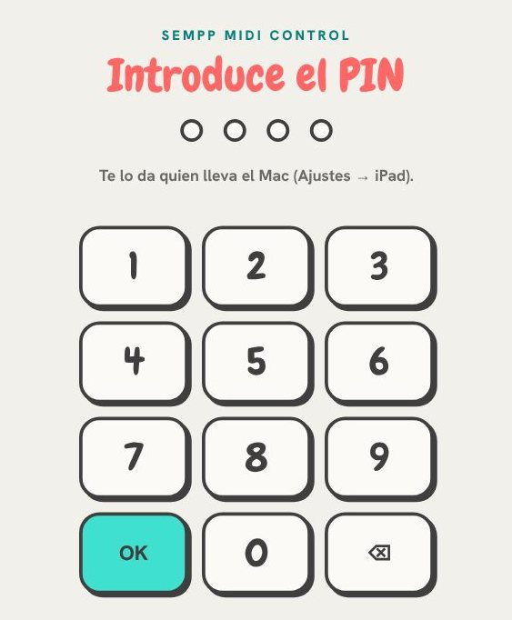
Sin PIN, cualquiera que esté en la misma wifi puede abrir las vistas. Para cerrarlo, ve a Ajustes → iPad → PIN de acceso, escribe un PIN de 4 a 6 números (o pulsa Generar), pulsa Guardar PIN y activa Pedir un PIN para entrar desde un iPad.
Cada iPad lo pide una sola vez con un teclado numérico y lo recuerda. Si cambias el PIN, todos los iPads conectados vuelven al teclado y hay que escribir el nuevo. Tras 5 intentos fallidos, ese iPad espera 60 segundos. El plugin y la vista de directo del Mac nunca lo piden. En la pestaña TUNE, el panel iPads te dice quién está dentro.
Controles táctiles
En Ajustes → iPad eliges el modo: Mantener pulsado (medio segundo, evita toques sin querer), Un toque (instantáneo) o Bloqueado. El candado de la barra de arriba bloquea todos los iPads al momento. También eliges qué puede controlar cada vista: solo salen los permisos que esa vista puede usar (el ▶ del setlist necesita «Elegir canción» y «Play / Stop»).
Al tocar, el botón responde al instante (se encoge un poco y cambia de estado) sin esperar a Console o a Ableton; si la orden no llega, vuelve como estaba y avisa. Lo que una vista no puede tocar se ve plano, sin sombra: es solo para mirar.
Vista de directo
El botón de la pantalla en la barra de arriba abre una tira flotante, siempre delante (también sobre Ableton a pantalla completa):
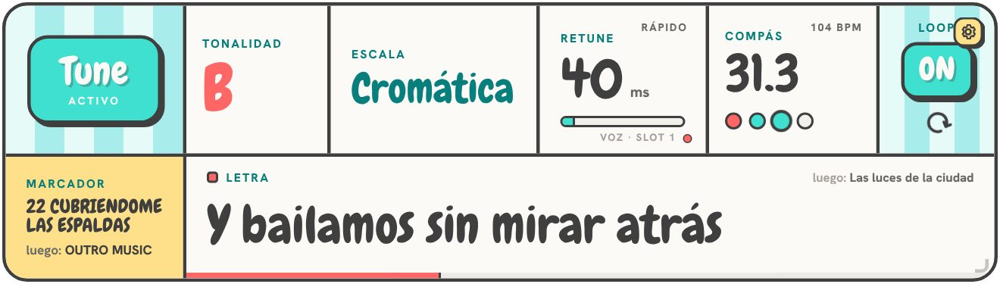
12345678
1Tune activo o en bypass.
2Tonalidad.
3Escala.
4Retune en milisegundos.
5Compás y pulso, con el tempo. NUEVO
6Loop, con la flecha girando cuando está activo. NUEVO
7Marcador (canción) y lo que viene.
8Textos de tus pistas (panel opcional).
Clics a través NUEVO
Ajustes de la ventana
Clic (o clic derecho) en el engranaje: opacidad (15 a 100 %), tamaño, posición en la pantalla, panel de textos, modo escenario (oscuro), destello al cambiar, fijar posición y clics a través. Sin clics a través, el clic derecho funciona en cualquier punto de la vista y se puede arrastrar con cualquier botón. La opacidad y los clics a través también están en el plugin: Ajustes → Vistas.
¿Por qué no basta un clic derecho normal con «clics a través»? Porque en ese modo macOS no entrega ningún clic a la vista: es lo que deja tocar Ableton por debajo. Capturar el clic derecho de todo el sistema exigiría el permiso de Accesibilidad, que con la app sin firmar se perdería en cada actualización. Por eso el engranaje y la tecla ⌥.
Ajustes NUEVO
El botón de ajustes (arriba a la derecha) abre un panel con seis pestañas, de lo general a lo particular:
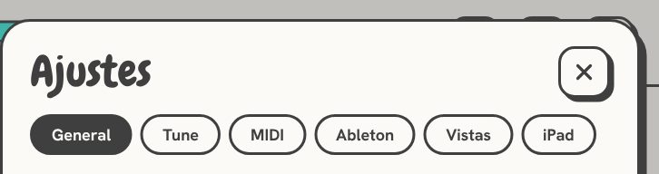
Pestaña
Qué hay dentro
General
Idioma, tema, tamaño de la ventana (de Pequeño a Muy grande: todo el plugin más grande o más pequeño, sin cambiar nada de sitio; los tamaños que no caben en tu pantalla salen apagados) NUEVO y tamaño de letra; actualizaciones y arranque al encender el Mac; ayuda (manual, asistente, web, enviar informe), registro, detener y desinstalar.
Tune
Qué Auto-Tune se controla y la conexión con UAD Console; bypass por CC y por Program Change.
MIDI
El puerto de SEMPP en Ableton, otras entradas y qué mueve cada CC (con Aprender).
Ableton
Estado del script, pistas cuyos textos se leen, pista de partes y los botones de Click y Artist Ref.
Vistas
Vista de directo (abrir, clics a través, opacidad, panel de textos) y visor de textos.
iPad
Activar el iPad, PIN de accesoNUEVO, modo táctil, códigos QR de cada vista con sus permisos y quién está conectado.
Tocando un canal MIDI en la pestaña TUNE se abre su propio panel: qué Auto-Tune controla y a qué buses reenvía.
Actualizaciones
Si el Mac tiene internet, SEMPP busca una versión nueva al abrirse y cada 6 horas (sin internet, lo vuelve a intentar cada 10 minutos). Si la hay, sale una ventana que te lo dice: en Qué hay de nuevo lees las novedades, mejoras y correcciones, y eliges Actualizar ahora (te pedirá la contraseña del Mac y SEMPP se reinicia solo) o Más tarde (queda un aviso pequeño arriba y la ventana vuelve la próxima vez que abras SEMPP). Antes de instalar se comprueba que el archivo no está dañado. Después, reinicia Ableton. NUEVO
Problemas y ayuda
Pasa esto
Prueba esto
«Sin Console»
Abre UAD Console con la Apollo encendida.
«Sin Auto-Tune»
Carga Auto-Tune en un canal de Console. En Ajustes → Tune puedes cambiar el nombre del plugin que se busca.
El indicador ABLETON está gris
Elige SEMPP en Superficie de control y reinicia Ableton.
El Auto-Tune no reacciona a los clips
Activa Track en la salida SEMPP MIDI CONTROL y revisa el MIDI To de la pista.
No puedo mover la vista de directo
Tiene los clics a través activados: arrastra el engranaje, o mantén ⌥ y arrástrala.
El iPad se desconecta
Mac por cable al router, iPad en la wifi del router (5 GHz) y lejos de la del recinto.
No sale el setlist
Pon localizadores en el Arrangement, uno al principio de cada canción.
Enviar un informe
Ajustes → General → Ayuda → Enviar informe. Cuenta en una línea qué ha pasado y pulsa el botón: SEMPP junta los registros en un .zip y prepara un correo en Mail con el archivo adjunto. Si no usas Mail, pulsa Guardar en el Escritorio y mándalo como prefieras.